Xi Mengyang
 


 


本人几乎没有玩过游戏，也没什么兴趣，之前也从没有接触过前端，但是在课程中对前端有了一定了解后发现自己虽然不会玩游戏对做出好看的界面还是非常 感兴趣的，或许这也会使我将来从事游戏开发相关领域成为可能。这次项目中主要负责美工部分，并且承担部分网页的搭建任务 ，我的目标就是通过小学期尽可能多的去学习前端开发的知识。
安静，不活跃， 用一个词来形容我自己就是“佛系”。我喜欢成竹在胸的沉稳，做事踏实，但也缺乏挑战的勇气，会在接触未知时手忙脚乱下意识逃避。其实这种性格有利有弊，希望自己在不断的学习之中，能够不断改进自己不足的地方， 发挥自己的优势，不断成长。